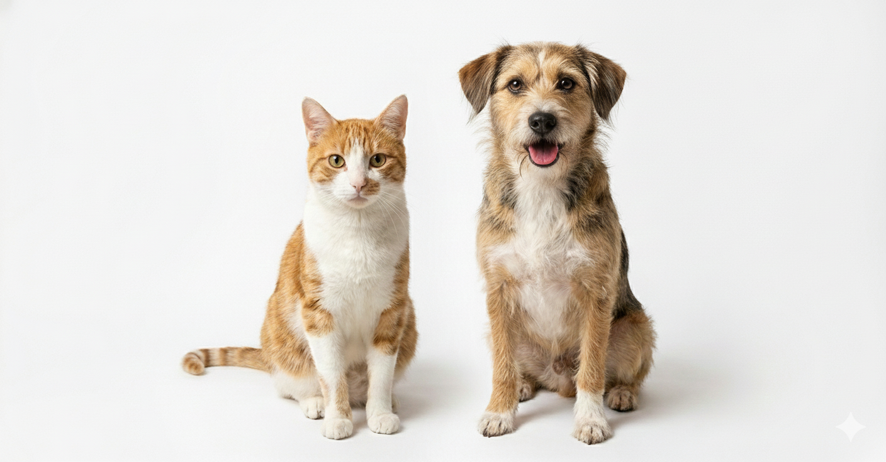

💖 Como Adotar no PetLar?
Após o login, você terá acesso ao nosso catálogo de animais. Poderá filtrar por espécie, porte, idade e localização. O processo é seguro e feito com abrigos verificados.
Lembrete: Adoção responsável só é liberada após o Login e preenchimento do formulário de perfil.
